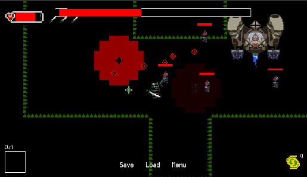

네온 루트
탑다운 슈터와 탄막 회피를 합친 로그라이트입니다. 적·보스 AI, 세이브, 대화 시스템을 맡았고 팀 PR을 리뷰했습니다.
프로젝트 개요
| 장르 | 탑다운 슈터 + 탄막 회피 로그라이트 (2D) |
|---|---|
| 플랫폼 | PC |
| 기간 | 2026.06 – 2026.11 |
| 팀 구성 | 5인 (기획 1, 개발 2, 사운드 1, 아트 1) |
담당 범위
| 기능 | 담당 | 확인 위치 |
|---|---|---|
| 적 3종 AI | 전담 | 사례 1, 2Assets/ |
| 보스 AI | 전담 | 사례 3Assets/ |
| 세이브 | 전담 | 사례 4Assets/ |
| 대화 시스템 | 전담 (재설계) | 사례 5Assets/ |
| 전투 맵 일부, UI | 직접 작성 · UI: 환경 설정, 세이브 창, 메뉴 버튼 | — |
| 게임 매니저 일시정지·시간 처리 | 트러블슈팅 · 문제 분석과 코드 수정 (게임 시간 구조 재설계는 팀원) | 사례 6 |
| 코드 리뷰 | PR 29개 중 18개 작성, 팀원 PR 7개 리뷰 | 사례 7 |
아래에 담당 기능별로 구현 내용과 겪은 문제를 정리했습니다.
1. 적마다 다른 행동을 하나의 흐름으로 묶기
적 3종은 상태와 이동 방식이 모두 다릅니다. 그래서 흐름은 공통 클래스가 정하고, 판단과 행동은 각 적이 구현하도록 나눴습니다.
| 적 | 상태 | 특징 |
|---|---|---|
| 원거리형 | Patrol → Detect → Combat ⇄ Reloading → Dead | 거리 5를 유지하며 좌우로 이동하며 사격, 재장전 때는 3배 속도로 거리 10까지 후퇴 |
| 지뢰형 | Patrol → Detect → LandMine → Reset → Dead | 지뢰 설치 후 초기 상태로 복귀 |
| 추적형 | Patrol → Detect → Track → Dead | 보스전에서 소환될 때는 Falling 상태로 시작 |
- 공통
EnemyBaseController: 스탯, 체력 UI, 순찰, 피격, 사망 연출, 감지 연출의 흐름
- 추상
일시정지 처리, 체력 소진 시 다음 상태, 감지 판정과 감지 완료 후 상태, 상태 초기화
- 개별
이동 방식, 플레이어에게 접근할 때의 행동, 공격
- 판단
순서가 같은 흐름(피격 → 체력 소진, 감지 연출 → 감지 완료)은 공통 클래스가 정하고, 다음 상태를 고르는 지점만 자식에게 넘겼습니다. 새 적은 판단 지점만 구현하면 됩니다.
// 공통 흐름은 Base가, 다음 상태 결정은 자식이
public virtual void TakeDamage(float amount)
{
health -= amount;
if (health <= 0) { OnHealthDepleted(); return; } // 자식이 구현
...
}
protected abstract void OnHealthDepleted();
protected abstract bool IsCurrentlyDetecting();
protected abstract void OnDetectComplete();- 재사용 대비: 활성화될 때마다 체력, UI, 상태, 순찰 기준점을 초기화해 다시 켜도 처음 상태로 시작합니다.
- 벽을 피하는 랜덤 순찰: 후보 지점이 벽과 겹치는지, 가는 길에 벽이 있는지 검사하고 최대 8번만 시도해 무한 루프를 막았습니다.
- 연출 도중 상태 변화: 감지 연출이 끝난 시점에 아직 감지 상태인지 다시 확인해, 연출 중 죽은 적이 전투로 넘어가지 않습니다.
2. 사망 애니메이션 도중 적이 사라지는 문제
- PROBLEM
Dead 애니메이션이 끝나기 전에 적이 맵에서 사라졌습니다.
- CAUSE
체력이 0이 되는 즉시 공격을 멈추고, 다른 클래스의 파괴 처리가 비활성화까지 바로 실행했습니다.
- SOLUTION
사망 시점에는 충돌만 끄고 애니메이션을 재생합니다. 비활성화와 섹터 처리는 애니메이션 끝의 이벤트에서 실행합니다. 코루틴 대기는 대기 시간을 코드에 적어야 해서, 클립 길이나 재생 속도가 바뀌면 어긋나므로 쓰지 않았습니다.
- VERIFY
일시정지 중 사망은 정상 동작을 확인했습니다. 적 슬로우모션 중에는 애니메이션이 원래 속도로 재생되는 것을 발견했습니다(회고 참고).
3. 보스: 페이즈 전환과 패턴 조합
보스는 순찰이 필요 없고, 사운드와 패턴 구조가 일반 적과 달라 별도 컨트롤러로 만들었습니다.
| 구간 | 동작 |
|---|---|
| 1페이즈 | 사격, 지뢰 설치, 적 소환 중 1개. 같은 패턴은 연속으로 나오지 않음 |
| 체력 50% 이하 | 2페이즈 전환. 미리 정한 2개 조합(사격+지뢰, 사격+소환, 지뢰+소환)을 동시에 실행. 이동 속도 1.5배, 사격 간격 0.5/2초 → 0.2/1초, 지뢰 반경 2~4.5 → 1~3 |
| 체력 25% 이하 | 회복 패턴 1회. 5초 안에 피해 5 이상을 받지 않으면 체력 15 회복 (수치는 플레이테스트로 조정) |
| 사망 | 남은 탄환, 지뢰, 소환된 적을 한 번에 제거 |
- PROBLEM
페이즈 전환 애니메이션 중에 보스가 움직였습니다.
- SOLUTION
전환 전용 상태를 두고 그 상태에서는 이동과 피격을 처리하지 않습니다. 진행 중이던 사격도 상태 전환 시 종료합니다.
- PROBLEM
보스의 첫 공격에서 사격 패턴이 한 번도 선택되지 않았습니다.
- CAUSE
같은 패턴이 연속으로 나오지 않도록 직전 패턴을 저장해 후보에서 빼는데, 이 변수의 기본값 0이 사격 패턴의 값(0)과 같았습니다. 그래서 첫 공격부터 사격이 직전 패턴으로 취급돼 제외됐습니다.
- SOLUTION
패턴 enum에 실제 패턴이 아닌 None(-1)을 추가하고, 직전 패턴의 초기값으로 사용했습니다. 수정 후에는 첫 공격에서도 사격이 후보에 포함됩니다.
이동은 벽에 막히면 벽 법선에 수직인 방향 중 원래 방향에 가까운 쪽으로 미끄러지도록 했습니다.
오브젝트 풀링: 탄막, 지뢰, 소환 적은 Unity ObjectPool<T>로 재사용합니다. 프리팹마다 풀이 나뉘어 있어, 각 오브젝트가 생성될 때 원본 프리팹을 기억했다가 반환할 때 넘겨 어느 풀로 돌아갈지 구분합니다.
4. 세이브: 저장 대상 분리와 원자적 쓰기
각 시스템이 자기 데이터만 저장하도록 나누고, 저장 중 종료돼도 기존 파일이 깨지지 않게 만들었습니다. 슬롯 5개, 저장 대상 4곳, 파일 크기 약 1KB입니다.
| 저장 대상 | 저장 항목 |
|---|---|
| 대화 | 이벤트 플래그 |
| 진행도 | 클리어한 씬 |
| 인벤토리 | 카드, 크레딧, 아이템 |
| 플레이어 | 프로토콜(스킬), 스탯 |
- 저장 대상 분리: 각 시스템이 ISaveable을 구현해 자기 데이터만 저장·복원합니다. 새 저장 대상은 인터페이스만 구현하면 추가됩니다.
- 슬롯은 한 곳에서 관리: 슬롯 번호는 SaveSlotManager만 알고, 각 시스템은 슬롯과 상관없이 자기 데이터만 다룹니다.
- JsonUtility 대신 Newtonsoft.Json: 저장 데이터에 Dictionary와 null 값을 써야 했습니다. Unity 기본 JsonUtility는 Dictionary를 직렬화하지 못하고 null을 그대로 유지하지 못해 Newtonsoft.Json을 선택했습니다.
- 원자적 쓰기: 임시 파일에 먼저 쓰고 완성되면 기존 파일과 교체합니다. 손상 사례가 있었던 건 아니고, 저장 중 강제 종료에 미리 대비했습니다.
string tempFilePath = filePath + ".tmp";
File.WriteAllText(tempFilePath, content); // 임시 파일에 먼저 기록
if (File.Exists(filePath))
File.Replace(tempFilePath, filePath, null); // 완성된 파일로 교체
else
File.Move(tempFilePath, filePath);팀에서 발견한 문제
- 아이템 Sprite 직렬화: 테스트 중 아이템 Sprite가 저장되지 않는 것을 발견했습니다. Sprite는 에셋 참조라 JSON에 값으로 저장할 수 없다는 원인을 공유하고, 아이템 ID만 저장하도록 제안해 팀원이 반영했습니다.
- 구조 변경 후 예전 세이브 로드 실패 (추후 보충): 필드를 추가한 뒤 예전 세이브가 손상된 데이터로 표시돼, 당시에는 세이브를 초기화했습니다. enum을 이름으로 저장하고 컬렉션 필드에 기본값을 넣는 수정을 진행 중이며, 끝나면 결과를 추가하겠습니다.
5. 대화 시스템: 단일 흐름에서 분기 구조로
냉장고 던전의 단일 흐름 대화를, 선택 결과가 이후 대화를 바꾸는 구조로 확장했습니다. 예를 들어 상점에서 해킹을 시도하면 이후 같은 대화가 다시 나오지 않아야 했습니다.
| 냉장고 던전 | 네온 루트 | |
|---|---|---|
| NPC | 1명 | 3명 |
| 분기 | 없음 | 선택지 24개 |
| 언어 | 단일 | 한국어, 영어 |
| 데이터 | 대사 순서 | 노드 약 60개, 조건 5종, 이벤트 8종 |
- 데이터 형식은 JSON 유지: 냉장고 던전에서 만든 JSON 기반 대화 코드를 이어서 확장할 수 있고, 대사 데이터를 코드와 씬에서 분리해 파일로 관리하기 편해 JSON을 그대로 사용했습니다.
- 진입 리다이렉트: 지난 선택(플래그)에 따라 대화의 시작점을 바꿉니다.
- 선택지 실패 분기: 고르는 순간의 조건(재고, 크레딧, 확률)에 따라 결과 대사를 바꿉니다.
- 확장 방식: 조건 판정을 코드에 쓰지 않고 데이터의 조건 id와 조건 핸들러로 처리해, 새 조건이 늘어도 진행 로직은 바뀌지 않습니다.
- 다국어: JSON에는 문장 대신 키만 저장하고, 문장은 Localization String Table에서 가져옵니다.
- 데이터 검수: 대화 JSON을 점검해 id 중복, phase 오기입, 세워지지 않는 플래그를 검사하는 분기 3건을 찾아 수정했습니다.
{
"id": "store_npc_0",
"text": "DLG_STORE_NPC_1", // 문장 대신 현지화 키
"entryConditionId": "CHECK_FLAG:shop_terminal_dead",
"entryRedirectId": "store_npc_9" // 조건이 참이면 시작점 변경
}데이터에 적힌 조건·이벤트 id는 DialogueEventBinder에서 실제 함수와 연결됩니다. 세워진 플래그도 이 클래스가 ISaveable로 저장합니다 (사례 4).
// 데이터의 id 문자열 ↔ 실제 처리 함수를 한 곳에서 연결
private void RegisterConditions()
{
DialogueEventDispatcher.RegisterCondition("CHECK_FLAG", CheckFlag);
DialogueEventDispatcher.RegisterCondition("HAS_CREDIT_FOR_ITEM", CheckHasCreditForItem);
DialogueEventDispatcher.RegisterCondition("RANDOM_CHANCE", CheckRandomChance);
...
}
private void RegisterEvents()
{
DialogueEventDispatcher.RegisterEvent("SET_FLAG", HandleSetFlag);
DialogueEventDispatcher.RegisterEvent("BUY_ITEM", HandleBuyItem);
DialogueEventDispatcher.RegisterEvent("STORE_HACK", HandleStoreHack);
...
}
private bool CheckFlag(string[] args) // "CHECK_FLAG:shop_terminal_dead"
{
return flags.Contains(args[0]); // 지난 선택으로 세워진 플래그인지 확인
}6. 시간 제어: 요구사항이 바뀔 때마다 생긴 문제
일시정지 구현에서 시작해, 기획이 바뀔 때마다 생긴 시간 처리 문제를 단계별로 고쳤습니다.
- 일시정지를 위해 timeScale을 직접 조작 → DOTween 연출까지 멈춤
- DOTween을 timeScale의 영향을 받지 않게 처리
- 기획 추가: 적만 슬로우모션, 플레이어와 UI는 정상 속도 팀원 작업
- 재설계: timeScale은 1로 유지하고 게임 시간을 별도로 분리 팀원 작업
- 새 문제: WaitForSeconds가 분리된 게임 시간을 모름 → 게임 시간 델타를 직접 누적하는 대기로 교체
private IEnumerator WaitForSecondsPausable(float duration)
{
float timer = 0f;
while (timer < duration)
{
if (!isPaused) timer += GameTime.WorldDeltaTime;
yield return null;
}
}- PROBLEM
설정 창과 메시지 창을 함께 연 뒤 하나만 닫아도 게임이 재개됐습니다.
- CAUSE
각 창이 timeScale을 직접 바꿔서, 먼저 닫힌 창이 전체 일시정지를 풀었습니다.
- SOLUTION
창마다 일시정지를 요청·해제하고, 남은 요청이 0일 때만 재개합니다. 씬 이동 시 요청 수를 초기화하고, 메뉴·세이브 창은 뒤에 패널을 깔아 동시에 여러 개가 열리지 않게 했습니다.
public void RequestPause() // 창이 열릴 때
{
pauseRequestCount++;
ApplyPause();
}
public void ReleasePause() // 창이 닫힐 때
{
pauseRequestCount = Mathf.Max(0, pauseRequestCount - 1); // 음수 방지
ApplyPause();
}
public void ForcedRelease() // 씬 이동 시 남은 요청 초기화
{
pauseRequestCount = 0;
ApplyPause();
}
private void ApplyPause()
{
bool shouldPause = pauseRequestCount > 0; // 열린 창이 하나라도 있으면 정지
GameTime.SetTimeScale(shouldPause ? 0f : GameTime.BeforeWorldTimeScale);
OnPauseGame?.Invoke(shouldPause);
}7. PR 코드 리뷰
프로젝트 시작부터 9월 중반까지 "PR마다 팀원 1명 이상 리뷰 승인" 규칙을 운영했습니다. 이 기간의 PR 17개 중 10개를 작성하고 팀원 PR 7개를 리뷰했습니다 (프로젝트 전체 기준으로는 PR 29개 중 18개 작성). 리뷰한 PR마다 코멘트를 5개 이상 남겼고, 모두 협의 후 코드에 반영됐습니다.
- REVIEW
다른 클래스가 적을 직접 비활성화하면 적 내부의 사망 처리를 건너뛰어 상태 초기화가 누락될 수 있다고 지적했습니다.
- SUGGEST
적이 자기 사망을 처리하는 공개 메서드를 쓰도록 제안했습니다. 밖에서 적을 바로 끄지 않고, 사망은 적이 스스로 처리하도록 했습니다.
- AI 검증
코드를 먼저 직접 분석해 가설을 세우고 AI로 예외 상황을 검증합니다. 이벤트 재구독 누락 가능성을 검토한 사례에서는 현재 요구사항에서 문제가 없다고 판단해 구조 변경을 보류했습니다.
회고
- 애니메이션과 게임 시간 비연동 (보류): 애니메이터와 DOTween이 분리된 게임 시간을 따르지 않아, 슬로우모션과 일시정지 중 이동과 애니메이션 속도가 어긋납니다. 지금은 연출이 짧아 보류했고, 연출이 길어지면 Animator.speed를 게임 시간 배율에 연동할 계획입니다.
- 대화 언어 즉시 반영: 표시 중인 대사는 다음 대사부터 바뀌기 때문에 언어 변경 이벤트가 발생하면 현재의 텍스트를 다시 조회할 필요가 있습니다.
- 세이브 버전 관리: 구조가 바뀔 때 세이브를 초기화하는 대신, 버전 필드와 로드 시 기본값 보정이 필요합니다.
- 일시정지 요청 관리: 숫자 대신 요청한 창을 집합으로 관리하면 중복 요청과 해제 누락을 코드로 막을 수 있기 때문에 추후 수정 예정입니다.